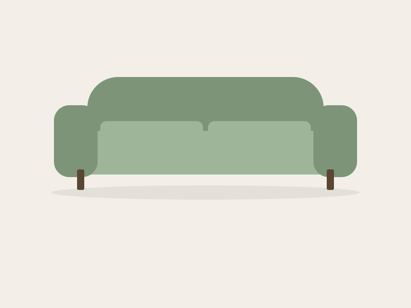
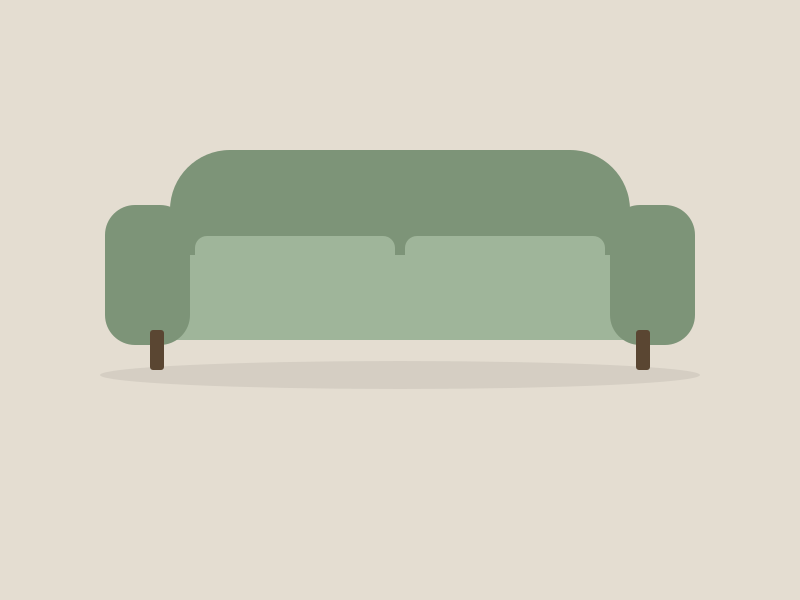

Sofa
Linnea Curved Sofa
€2,490.00
Item no. NH-1002
A gently curved sofa that invites conversation. Made for open-plan rooms where the back of the sofa is on show.
Dimensions
- Width: 240 cm
- Depth: 105 cm
- Height: 76 cm
- Seat height: 43 cm
Material & Construction
- Frame: plywood and solid pine
- Suspension: webbing
- Cushions: high-resilience foam
- Upholstery: cotton velvet, sage
Features & Feel
- Medium-firm seat
- Velvet with a soft sheen
- Finished back, can stand free in the room